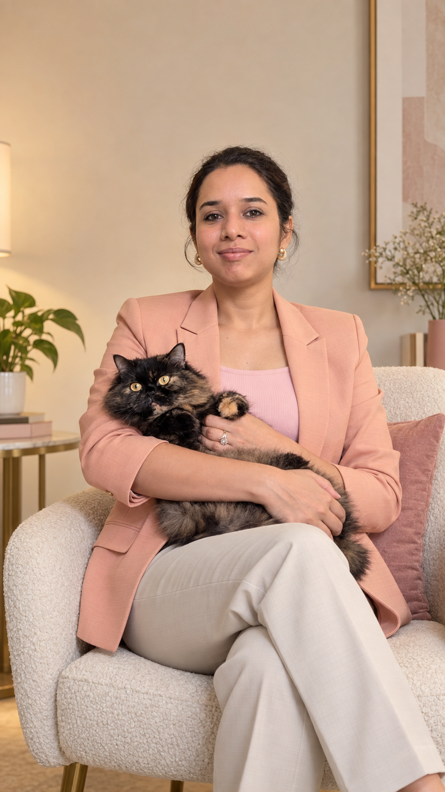

ABOUT
The story behind ALIVE — and why I believe there is more life inside all of us.

A few years ago, I wrote something that quietly changed my life.
“Exploring myself. Understanding life.”
At the time, I didn't know those words would become the beginning of everything.
I was overworking. Always doing more. Yet somehow, feeling less.
I was losing my creativity. Feeling drained. Feeling like I didn't quite fit into the life I was building.
So I stopped searching for the next achievement... and started searching for myself.
ALIVE is for people who may be functioning perfectly well on the outside, but inside feel drained, disconnected, stuck or are living life like a routine.
People who have lost touch with what excites them. People who are burdened by expectations and the pressure of social image.
ALIVE is about helping you reconnect with yourself, your energy, your strengths, your creativity and your human potential — and create a life that feels more intentional, authentic and fulfilling.
I'm a good listener. I notice things. I love bringing happiness and energy into people who may have forgotten what that feels like.
I don't want to tell you who to become. I want to help you discover who you already are.
As a Life Coach, my role is to create the space for your exploration, to help you question what no longer fits, to help you reconnect with yourself, and to help you bring more life into your life.
I don't believe the journey of understanding yourself ever really ends.
I'm still learning.
I'm still exploring.
And that's exactly why this work feels so meaningful to me.
When something feels heavy, it's natural to spend time with it. Just don't stay there for too long.
Give it the right attention, understand it, do what you can, and then let yourself move forward peacefully. Your days and years are precious.
You deserve to feel lighter, and there is always a next step.
From Surviving to Living.
Still exploring myself. Still understanding life.